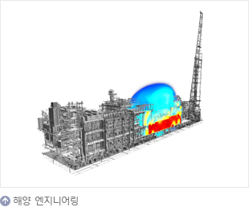

제품/기술
- LNG선
- 친환경 고효율 엔진으로 LNG선 시장선도

-
LNG선은 영하 163도로 액화된 천연가스를 운반하는 선박입니다.
특히 2001년에는 기존 대비 운항성능과 연비가 뛰어난 '전기추진 LNG선'을, 2008·2009년에는 세계 최대 크기인 26만6천 입방미터급 LNG선을, 2013년 이후에는 연비를 혁신적으로 개선한 '친환경 고효율 엔진 LNG선'을 각각 성공적으로 건조함으로써 앞선 기술력을 선보였습니다.
또한 LNG선의 핵심기술이라고 할 수 있는 화물창에서는 독자 개발한 한국형 화물창인 KC-1을 실선에 적용하는데 성공하였습니다.
그리고 극지용 쇄빙 LNG선, 수입국에서 LNG 기화 및 저장설비 역할을 하는 LNG-FSRU, LNG 연료주유선인 위한 LNG Bunkering 선박 등 신개념 선박 개발에도 주력하여 LNG시장에서 기술 혁신을 주도하고 있습니다.
- 부유식 재기화설비
- 재기화설비 강자로 부상
-
LNG FSRU는 해상에 정박한 상태로 LNG 운반선으로부터 액화천연가스를 받아 저장하고, 이를 재기화하여 GAS 상태로 파이프라인을 통해 육상 수요처로 공급하는 LNG 수입 터미널입니다..
동남아를 비롯한 LNG 수요 증가로 FSRU 설비 수요 또한증가하고 있습니다.
또한 당사는 재기화 시스템 국산화를 위하여 독자 기술로 S-Regas를 개발해 수주에 성공하는 등 다양한 재기화 시스템 및 선형 개발로 FSRU시장을 선도하고 있습니다.
- 유조선
- 친환경 기술을 자랑하는 원유운반선
-
유조선은 원유를 운송하는 원유운반선, 정제과정을 거친 석유제품을 운송하는 정유운반선, 그리고 FPSO 등 해양 생산설비에서 생산한 원유를 육상기지로 운송하는 셔틀탱커가 있습니다.
삼성중공업은 1992년 세계 최초로 아프라막스급 이중선체 유조선을 건조한 바 있으며, 친환경 선박 개발을 위해 지속적으로 노력하고 있습니다.
셔틀탱커는 높은 파도와 바람, 조류의 영향을 받는 해상에서 일정한 위치를 유지하며 원유생산설비에 안정적으로 접안 할 수 있도록 첨단 위치제어 장비가 탑재되어있는 고부가가치 선박입니다.
삼성중공업은 전세계 셔틀탱커 138척 중 61척을 수주해 시장점유율 44%를 기록하며 이 분야에서 1위를 수성하고 있습니다.
- 쇄빙유조선
- 극지 원유 운송의 새 지평, 양방향 쇄빙유조선
-
삼성중공업은 2007년 세계 최초로 7만톤급 극지운항용 전·후진 양방향 쇄빙유조선를 건조하였고 이 후에도 7척을 추가로 수주하는데 성공했습니다.
이 선박은 최대 두께 1.4m의 얼음을 깨고 시속 3.5노트(knot)의 속도로 항해할 수 있으며, 영하 45도의 혹한에서도 견딜 수 있도록 설계됐습니다.
쇄빙유조선은 쇄빙선과 유조선을 하나로 결합하여 운송 효율을 획기적으로 향상시킨 신개념 선박으로 평가받고 있습니다.
- 컨테이너선
- 컨테이너선 대형화 주도
-
삼성중공업은 5,000TEU급 컨테이너선이 주종을 이루던 지난 1999년에 세계 최초로 6,200TEU급 컨테이너선을 개발한 이래, 8,100TEU급(2002년), 9,600TEU급(2003년), 13,300TEU급(2006년), 16,000TEU급(2007년) 선박을 세계 최초로 개발하며 컨테이너선의 대형화를 선도해왔습니다.
2015년에는 20,100TEU급 컨테이너선 4척과 21,100TEU급 컨테이너선 6척을 잇달아 수주하며 세계 최대 컨테이너선 수주 기록을 경신하였고, 2017년에는 23,000TEU급 컨테이너선 6척을 수주하며 컨테이너선 시장의 새 역사를 쓰고 있습니다.
- 초대형 에탄운반선
- 세계 최초 초대형 에탄운반선으로 신시장 개척
-
에탄운반선은 셰일가스 등 천연가스에서 추출되는 에탄을 액화하여 운반하는 선박입니다.
삼성중공업은 2014년 세계 최초로 87만 입방미터급 에탄 운반선을 수주해 신시장 개척에 성공했습니다.
에탄운반선은 운항성능이 뛰어나면서도 친환경적인 고부가가치 선박입니다.
삼성중공업은 셰일가스 개발과 함께 증가할 것으로 예상되는 에탄운반선 시장에서 성공적인 교두보를 마련한 것으로 평가받고 있습니다.
- 여객선
- 유럽형 대형 여객선의 지속적인 개발
-
삼성중공업은 지금까지 그리스 미노안(Minoan)社, 네덜란드 노포크(Nofork)社, 스웨덴 스테나(Stena)社 등으로 부터 총 9척의 여객선을 수주하면서 크루즈선 사업 진출 기반을 착실히 다졌습니다.
또한 2009년에는 국내 최초로 LNG를 연료로 사용해 운항 중 발생하는 질소산화물과 황산화물 배출량을 각각 90% 이상 감축시킨 친환경 여객선을 개발하는 등 친환경 기술 연구에도 앞장서고 있습니다.
- FLNG
- FLNG로 해양플랜트 설비시장 선점
-
FLNG(Floating LNG)는 해상에서 천연가스를 채굴한 뒤 이를 정제하고 LNG로 액화해 저장ㆍ하역할 수 있는 해양 플랜트 설비입니다. FLNG를 이용해 해저 가스전을 개발할 경우 평균 2조원에 달하는 육상 액화ㆍ저장설비 건설이 필요 없으며, 해저 파이프를 설치하지 않기 때문에 해저 생태계도 보호할 수 있다는 장점이 있습니다.
삼성중공업은 2009년 로열더치셸(Royal Dutch- Shell)社와 FLNG 장기공 급계약을 체결하고,세계 최초이자 최대 규모의 프릴루드(Prelude) FLNG를 2011년 약 3조원에 수주해 2017년 6월 성공적으로 인도하였습니다.
또한 2014년 페트로나스(Petronas)社, 2017년에는 ENI社로부터 FLNG를 수주하며 해당 분야에서 두각을 나타내고 있습니다.
- FPSO
- 세계 최다 FPSO 건조실적
-
FPSO는 부유식 원유생산저장하역설비(Floating, Production, Storage and Off-loading vessel)로서 심해 유전이나 유전의 조기 개발, 중소규모 유전 개발에 활용되는 고가의 해양설비입니다.
FPSO는 독립된 한 개의 프로젝트가 아니라 수십억달러 규모의 유전개발 전체와 맞물려 있어 예기치 못한 사고나 차질이 발생하면 유전개발 자체가 중단될 수 있습니다.
따라서 경험에 의존해 답습하는 기술 수준으로는 엄청난 위험부담을 피할 수 없으며, 과학적인 검증을 통한 고도의 신뢰성과 안전성이 필요한 해양설비입니다.
삼성중공업은 이제까지 세계 유수의 오일메이저에서 발주한 총 16기의 FPSO를 성공적으로 건조함으로써 독보적인 기술력을 인정받고 있습니다.
- 부유식 해양구조물
- 고부가가치의 해양구조물 생산으로 기술력 축적
-
부유식 해양구조물은 심해 해상에 설치돼 해저 유전의 시추와 생산 작업에 투입되는 설비입니다.
삼성중공업은 세계 최초 FLNG 개발에 이어 세계 최대 규모의 CPF 수주로 해양구조물의 역사를 새로이 쓰고 있습니다.
또한, 삼성중공업은 2010년 7월 국내에서 최초로 가즈플롯(Gazflot)社의 반잠수식 원유시추설비의 상·하부 구조물을 해상에서 합체하는데 성공하며, 한국 조선업계의 해양플랜트 건조기술력을 한 단계 업그레이드 시켰다는 평가를 받았습니다.
뿐만 아니라, 부유식 해양구조물 분야에서 축적해 온 경험과 기술력을 바탕으로 2017년에는 영국의 비피(BP)社로부터 대형 FPU를 수주하는데 성공했습니다.
- 고정식 해양플랫폼
- 세계 시장에서 빛나는 이름, 삼성중공업

-
고정식 해양플랫폼은 수심이 비교적 얕은 해상에 고정하여 설치되는 해양자원개발설비입니다.
고정식 해양플랫폼에는 콘크리트 중력식 구조물, 자켓 구조물, 가이드 타워, 갑판승강형 등 여러 종류가 있습니다.
이제까지 삼성중공업은 세계 유수의 오일 메이저로부터 수많은 플랫폼을 수주, 성공리에 인도해 왔습니다.
특히 삼성중공업은 러시아의 사할린 에너지 인베스트먼트(SEIC)社로부터 수주한 세계 최대규모의 해양플랫폼 2기를 2006년과 2007년에 각각 성공적으로 인도하였으며, 2015년에는 스타토일(Statoil)社로부터 북해 Sverdrup 플랫폼 공사를 수주하여 국내조선소 중 유일하게 2015년도 해양공사를 수주실적을 기록하기도 하였습니다.
- 드릴쉽
- 드릴십 세계 시장점유율 1위

-
드릴십은 심해지역이나 파도가 심한 해상에서 원유를 발굴하는 시추설비로 고도의 선박건조기술과 해저시추 기술이 필요한 고부가가치선입니다.
삼성중공업은 1998년 국내 조선업계 최초로 드릴십(Deepwater Pathfinder)을 건조한 바 있으며, 이후 축적된 기술과 건조경험을 바탕으로 2012년 3월 스웨덴 스테나(Stena)社에 인도한 스테나 아이스막스(Stena Icemax)호는 극지방에서 시추작업을 수행할 수 있는 세계 최초의 극지용 드릴십입니다.
2015년말 기준, 삼성중공업은 지난 1996년 이후 전 세계에서 발주된 대형 드릴십 가운데 64척을 수주하며 42%의 시장점유율을 기록하고 있습니다.
- 잭업리그
- 새로운 먹거리로 떠오른 고부가 시추설비
-
잭업리그(Jack-up Rig)는 통상 대륙붕 유전 개발에 투입되는 시추 설비입니다.
잭업리그는 잭업레그를 바다 밑으로 내려 해저면에 고정하고, 선체를 해수면 위로 띄워 작업함으로써 파도와 조류의 영향을 받지 않는 장점이 있습니다.
삼성중공업이 2013년 6월에 수주한 북해용 대형 잭업 리그는 최대 수심 150m 해역에서 해저 10km까지 시추할 수 있습니다.
이 설비는 영하 20도까지 떨어지는 북해의 혹한과 거친 해상 조건 속에서 작업할 수 있도록 고사양으로 제작됩니다.
- 해양개발선
- 최고의 기술력으로 이뤄낸 해양개발선 건조

-
2000년 11월 국내 조선업계 최초로 다목적 해양개발선(FDS, Field Development Ship)인 'SaiBOS FDS'를 건조해 우수한 DP(Dynamic Positioning) 성능 및 소음·진동 수준을 기록함으로써 특수선 분야에서 쌓아온 기술력을 입증 한 바 있습니다.
또한 삼성중공업이 2008년 6월에 수주한 'Saipem FDS' 최대 13노트의 속력으로 운항할 수 있으며, 수심 3000미터까지 탐사 및 채굴이 가능합니다.
- 풍력발전기 설치선
- 세계 최대 풍력설치선 건조
-
삼성중공업은 '12년 7월 인도한 스와이어(Swire)社 풍력발전기 설치선은 3.6MW급 풍력 발전기 12기를 동시에 운반·설치할 수 있으며, 초속 20m의 바람과 2.5미터의 파도가 치는 열악한 해상환경에서도 최대 36시간마다 풍력발전기 1기씩 설치할 수 있도록 제작됐습니다.
이 선박은 선체에 장착된 6개의 기둥을 해저면에 내려 배를 공중에 10미터 가량 띄운 상태로 고정하여 작업함으로써 파도와 바람의 영향을 최소화하고, 설치의 정확성과 신속성을 기할 수 있습니다.
- 조선사업
-
삼성중공업은 1974년 창립 이래 세계 유수의 해운선사로부터 1,285척(2020년 12월 기준)의 선박을 수주하여 그 중 1,179척을 성공적으로 인도하며 뛰어난 기술력과 우수한 품질을 인정받고 있습니다.
1995년 국내 최초로 셔틀탱커를 건조한 이래 전세계에서 발주된 셔틀탱커 147척 가운데 64척을 수주해 시장 점유율 44%를 장악하며 압도적인 품질 경쟁력을 입증하고 있습니다.
가스 체인 부문에서는 2008년 세계 최대 크기인 266,200㎥의 LNG선을, 2011년에는 국내 업계 최초로 멤브레인형 LNG선 화물창을 독자 개발함으로써 LNG선 건조 경쟁력을 한층 끌어 올렸습니다. 2013년 이후에는 연비를 혁신적으로 개선한 '친환경 고효율 엔진 LNG선'을 건조하였으며, 2014년에는 세계 최초로 에탄운반선을 수주하며 앞선 기술력을 선보이고 있습니다.
또한, 2017년에는 23,000TEU급 세계 최대 컨테이너선을 수주하는 등 고기술·고부가가치선 시장을 선도하고 있습니다.
- 해양산업
-
삼성중공업은 드릴십, FPSO 분야에서 세계 최다 건조실적을 보유하고 있습니다. 또한 고도의 안정성과 기술력을 필요로 하는 고정식 해양플랫폼, TLP, 부유식 해상구조물 등 해양개발설비 시장에서도 축적된 선박 건조 기술을 바탕으로 세계 주요 오일 메이저 기업들로부터 인정을 받고 있습니다.
한편 삼성중공업은 해양개발설비의 핵심이라 할 수 있는 탑사이드 설계 및 시공 능력을 확보하면서 우수한 턴키 제작 능력을 보여주고 있습니다. 러시아 사할린 에너지 인베스트먼트社로부터 수주한 세계 최대 규모 해양플랫폼과 프랑스 토탈(Total)社로부터 수주한 세계 최대 규모의 에지나 FPSO가 대표적인 성과이며, 2010년에는 러시아 가즈플롯(Gazflot)社로부터 수주한 원유시추설비의 상부구조물과 하부구조물을 해상에서 합체하는 공법을 선보였습니다.
특히 삼성중공업은 해상에서 LNG를 생산할 수 있는 FLNG와 같은 신시장 개척에 앞장서고 있습니다. 2011년에는 연간 360만톤 생산이 가능한 세계 최초이자 최대 규모의 FLNG를 로열더치셸(Royal Dutch- Shell)社로부터 수주해 2017년 성공적으로 인도하였고 뒤이어 페트로나스(Petronas)社로부터 수주한 FLNG도 2020년 인도하였습니다. 2017년에는 ENI社 수주도 성공하여 FLNG 시장에서 독보적인 경쟁력을 확보하고 있습니다.
- 실적
-

- SAVER Air
-
공기 윤활 시스템(SAVER Air)은 선체 바닥에 공기를 분사하여 해수와의 마찰 저항을 줄여 선박의 연비를 향상 시키는 친환경 시스템입니다.
삼성 중공업이 자체 개발한 SAVER Air 를 170,000m3급 LNG선에 적용한 결과, 5% 이상의 연료 절감 효과가 입증되었으며, 향후 다양한 선종에 확대 적용해 수주 경쟁력을 향상시키고자 합니다.
- SAVER Stator / Stator-D
-
삼성중공업이 독자 개발한 SAVER Stator-D는 선박의 프로펠러로 유입되는 해수의 흐름을 균일하게 함으로써 프로펠러의 추진력을 증가시켜 연비를 향상시키는 연료 절감 장치입니다.
삼성중공업은 SAVER Stator-D를 선박에 적용해 약 2%의 연비 절감 효과를 입증했으며, 이를 통해 향후 수주 경쟁력 강화에 기여할 것으로 기대합니다.
- SAVER CAP
-
대형 컨테이너선의 선수에 설치해 선체 주변의 해수 흐름을 제어함으로써 연비를 향상시키는SAVER CAP을 개발했습니다. SAVER CAP을 통해1.8%~3.7% 수준의 연비가 개선되며 선체 진동도 줄어 선수 의장품과 컨테이너 박스의 안전한 보관이 가능합니다.
- 배터리 시스템
-
삼성중공업은 배터리 충방전 알고리즘을 포함한 선박용 전력 제어 시스템 기술(EMS)을 독자 개발하였을 뿐만 아니라, 삼성SDI와 공동으로 선박용 리튬이온배터리 시스템의 국산화 개발에도 성공하였습니다.
- 연료전지 시스템
-
연료전지 기술은 수소와 산소의 전기화학적 반응을 통하여 화학에너지를 전기에너지로 직접 변환시켜주는 장치로, 최근 글로벌 환경규제 강화에 따라 선박 배기가스 저감 기술의 하나로 연료전지에 대한 관심이 증가되고 있습니다.
- 스마트십 솔루션(SVESSEL)
-
삼성중공업 스마트십은 정보통신 기술과 선박운용 기술을 융합하여 경제적이고 안전한 운항이 가능한 선박을 말하며, 클라우드 데이터 센터를 기반으로 선박과 관련된 모든 데이터를 통합 관리함으로써 육상에서 원격 지원 및 생애주기 서비스가 가능한 육해상 통합 관리시스템입니다.
또한, 삼성중공업은 고객들에게 스마트십에 대한 보다 자세한 정보를 제공하기 위해 삼성 스마트십(SVESSEL) 공식 홈페이지(shi.svessel.com)를 운영 중에 있습니다.
- 선내 경제/안전 운항 솔루션(SVESSEL Onboard)

-
삼성중공업의 독자적인 IoT 플랫폼인 BIG(onBoard Integrated Gateway)을 통해 실시간으로 운항 및 기관 데이터를 수집합니다.
SVESSEL Onboard 는 선박에 탑재된 솔루션으로 경제적이고 안전한 운항이 가능하도록 항해사나 기관사에게 정보를 제공 하고, 의사결정을 지원합니다.
- 육상 관제 솔루션(SVESSEL Onshore)
-
선박의 실시간 데이터를 모아서 삼성중공업이 그 동안 인도한 선박들 약 950척의 실시간 위치를 모니터링하여 관제하고 있습니다.
실시간 데이터를 빅데이터 기술을 활용해서 분석하고 육상에서 의사결정을 할 수 있도록 지원하여 현재 보증 기간동안 선주사들에게 제공하고 있습니다.
- 영상 기반 견시 지원 솔루션
-
어라운드뷰를 기반으로 주변 선박을 인지하고 운항 중에 발생할 수 있는 충돌에 대한 리스크를 감지하여 충돌을 회피할 수 있는 경로를 제공합니다.
- LNG 연료공급 시스템(S-Fugas)
-
최근 2행정 LNG 연료 추진 엔진이 LNG선에 적용되고 있습니다. MEGI 엔진은 300bar의 고압 FGSS가 요구되며, X-DF 엔진은 16bar의 저압 FGSS가 요구됩니다.
삼성중공업은 LNG 연료공급 시스템(S-Fugas)을 자체 개발해 엔진별 최적의 LNG FGSS를 제공하고 있습니다.
- 부분 재액화 시스템(S-Reli)
-
LNG 운반선에서 발생하는 증발가스는 선박의 엔진 연료로 사용되었으나, 최근 고효율 엔진이 적용되면서 증발가스의 연료 전환이 크게 줄었습니다. 삼성중공업은 선박 연료로 사용되지 못한 증발가스를 재액화해 화물창에 저장하는 부분재액화 시스템(S-Reli)을 개발했습니다.
S-Reli를 적용할 경우 연간 약 만 톤의 증발가스를 재액화할 수 있으므로, 엔진과 병행운전을 통해 증발가스의 소모 없이 최적의 상태로 운항할 수 있습니다.
- 재기화 시스템(S-Regas)
-
삼성중공업은 액화 상태로 저장·운송된 LNG를 사용하기 위해 다시 기체로 만드는 LNG 재기화 시스템(S-Regas)을 독자 개발했습니다. 해수를 이용하는 직접식과 글리콜 혼합액을 이용하는 간접식이 있으며, 다운타임을 최소화하고 운전자 편의를 고려한 제어기술이 적용됐습니다.
S-Regas의 국산화를 통해 원가 절감은 물론, 납기와 품질을 효율적으로 관리할 수 있어 삼성중공업의 수주 경쟁력을 한 층 강화했습니다.
- XDF용 재액화시스템(X_Reli)
-
X-DF 엔진을 적용하는 LNG 운반선에서 발생하는 증발가스를 재액화하기 위한 시스템으로, 별도의 냉매를 사용하지 않고, 재액화 용량을 증대하여 BOG 손실을 최소화하였습니다.
- 냉열발전 시스템

-
LNG에 저장된 냉열을 활용하여 발전기를 구동하고 이를 통해 재기화설비 운용에 필요한 전력을 공급하는 시스템으로, 글리콜 혼합액을 사용하지 않고 별도의 열전달매체를 이용해서 해수를 이용한 기화, 터빈을 통한 팽창하는 과정에서 발전이 가능합니다.
재기화 설비 운용 시에 발생하는 온실가스 배출을 Zero화할 수 있습니다.
- 연료탱크(독립형 멤브레인)
-
어라운드뷰를 기반으로 주변 선박을 인지하고 운항 중에 발생할 수 있는 충돌에 대한 리스크를 감지하여 충돌을 회피할 수 있는 경로를 제공합니다.
- 해양 엔지니어링
- 
-
성능과 안전은 무엇보다도 우선되어야 합니다. 이를 위해 삼성중공업은 Process, Safety, 진동소음 등 핵심 엔지니어링을 자체수행하고 기술선도 함으로써 기존 제품에 대한 성능/안전을 세계 최고 수준으로 유지할 뿐만 아니라 새로운 Concept 제품을 실현해 오고 있습니다.
삼성중공업에서 수주한 FLNG, FPSO, FSRU, FSO 등 다양한 선종에 대한 엔지니어링 혁신은 지금도 지속적으로 진행되고 있습니다.
- 해양 프로젝트 재료 엔지니어링
-
기존 해양플랜트 재료 엔지니어링 기술은 해외 의존도가 높아 프로젝트 수행의 리스크가 높았습니다. 이에 삼성중공업은 자체 재료 검증 및 재료 선정 프로세스를 독자 개발함으로써 프로젝트 수행 리스크를 완화하고, 기술 자립화를 통해 해양 엔지니어링 설계 기술 경쟁력을 확보했습니다.
- Topside Package
-
'해양생산설비에 대한 엔지니어링 자립화 및 강화를 위해 전처리 공정(Pre-treatment Process)에 해당되는 Separator, Acid Gas Removal Unit, Dehydration Unit, MEG Regeneration Unit을 파일럿으로 제작하여 운영중에 있습니다.
이를 통해 당사는 해양생산설비 설계 결과를 검증하고 향후 발주되는 해양생산설비 수주에 적극적으로 활용하고 있습니다.
- 배관응력해석 자동화시스템(OPAAS)
-
삼성중공업은 반복 해석 및 재해석 작업의 효율화를 위해 배관응력해석 자동화 시스템(OPAAS, Optimized Piping Analysis Automation System)을 개발해 응력해석 시수를 단축하고 배관의 응력을 저감시키는 성과를 달성했습니다.
- DP/PMS/SPT HILS
-
선박·해양플랜트에 탑재되는 시스템이 복잡해짐에 따라, 제어 시스템의 중요성이 대두되고 있습니다.?삼성중공업은 다양한 시스템에 대한 HILS(Hardware In the Loop Simulation)기술을 적용, 가상 시뮬레이션을 통한 제어시스템 검증을 수행하여 선박·해양플랜트의 신뢰성과 가용성을 높이고 시운전 중의 리스크와 비용 등을 최소화 하였습니다. 특히, 국내 중소기업과의 기술협력을 통해 국내최초로 동적 위치제어 시스템(DPS, Dynamix Positioning System), 전원 관리 시스템(PMS, Power Management System) HIL을, 세계 최초로 SPT(Steering/Propulsion/Thruster, 조향장치/추진장치/보조추진장치) HIL을 국내 기술만으로 실선 적용하여 DNV-GL 인증을 완료하였습니다.
- Engineering Data Change Management
-
프로젝트 전 과정에서 생성되는 정보를 일괄적으로 관리하는 시스템을 구축했습니다. 이를 통해 데이터 정합성이 향상되고, 변경 정보에 대한 효율적 관리가 가능합니다.
또한 프로젝트 운영 관리를 위한 Handover 데이터를 자동으로 생성해 Handover를 위한 부가적 업무를 획기적으로 절감할 수 있습니다.
- Safety Study
-
삼성중공업은 안전을 최고의 경영 가치로 생각하고 있으며 이를 위해 제품의 Concept 단계부터 안전한 시스템 및 운전환경을 만들고자 국제 표준에 부합하는 다양한 Safety Study를 설계 단계 별로 진행하고 있습니다.
특히 화재, 폭발, 인명탈출 등에 대한 Safety Study 전문 인력 및 시스템을 확보하고 있으며 국내외 전문기관과 지속적인 기술개발을 함으로써 Safety 기술 발전을 선도하고 있습니다.
- HVAC 엔지니어링
-
다수의 해양 프로젝트 수행에 따라 HVAC(Heating, Ventilating, and Air Conditioning) 시스템 설계시 기본설계부터 상세설계까지 통합 검토 가능한 신뢰성 높은 통합 엔지니어링 기술의 필요성이 제기됨에 따라 엔지니어링 노하우를 반영한 독자 HVAC 엔지니어링 시스템을 구축하였습니다.
독자 시스템을 적용함에 따라 정확도 높은 시스템 설계가 가능해졌으며, HVAC 시스템에 문제나 추가 요구사항 발생시 신속한 대응으로 고객 신뢰도 제고에 큰 기여를 하고 있습니다.